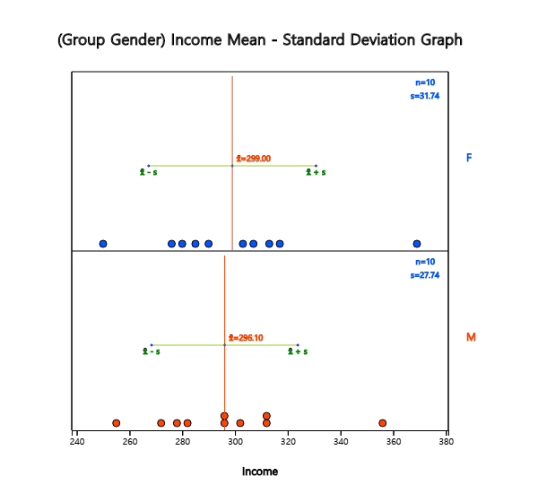

In Chapter 7, we discussed how to test hypotheses about parameters in a single population.
In this chapter, we discuss testing hypothesis to compare population parameters of two populations.
Section 8.1 discusses a t-test for testing hypothesis of two population means when samples are independent and when samples are paired.
Section 8.2 discusses a F-test for testing hypothesis of two population variances.
Section 8.3 discusses a Z-test for testing hypothesis of two population proportions when samples are large enough.
There are many examples comparing means of two populations as follows:
- Is there a difference between the starting salary of male graduates and of female graduates in this year’s college graduates?
- Is there a difference in the weight of the products produced in the two production lines?
- Did the special training for typists to increase the speed of typing really bring about an increase in the speed of typing?
As such, a comparison of the two population means (\(\mu_1\) and \(\mu_2\)) is possible by testing hypothesis that the difference in the population means is greater than, or less than, or equal to zero. The comparison of two population means differs depending on whether samples are extracted independently from each population or not (referred to as paired samples).
8.1.1 Two Independent Samples
Generally, testing hypothesis for two population means can be divided into three types,
depending on the type of the alternative hypothesis as follows.
$$
\begin{multline}
\shoveleft 1)\quad H_0 : \mu_1 - \mu_2 = D_0 \qquad H_1 : \mu_1 - \mu_2 \gt D_0 \\
\shoveleft 2)\quad H_0 : \mu_1 - \mu_2 = D_0 \qquad H_1 : \mu_1 - \mu_2 \lt D_0 \\
\shoveleft 3)\quad H_0 : \mu_1 - \mu_2 = D_0 \qquad H_1 : \mu_1 - \mu_2 \ne D_0 \\
\end{multline}
$$
Here \(D_0\) is the value for the difference in population means to be tested.
When samples are selected independently from each other in the population,
the estimator of the difference of the population means \(\mu_1 - \mu_2\) is the difference
in sample means \(\small {\overline x}_1 - {\overline x}_2\). The sampling distribution of
all possible sample mean differences is approximately a normal distribution with the mean
\(\mu_1 - \mu_2\) and variance \(\frac{\sigma^2_1}{n_1} + \frac{\sigma^2_2}{n_2}\)
if both sample sizes are large enough.
Since the population variances \( \sigma^2_1 \) and \( \sigma^2_2 \) are usually unknown,
estimates of these variances, \( s^2_1 \) and \( s^2_2 \), are used to test the hypothesis.
The test statistic differs slightly depending on the assumption of two population variances.
If two populations follow normal distributions and their variances can be assumed the same,
the testing hypothesis for the difference of two population means uses the following statistic.
$$ \small
\frac { ({\overline x}_1 - {\overline x}_2 ) - D_0 }{\sqrt{\frac{s^2_p}{n_1} +\frac{s^2_p}{n_2} } }
\qquad \text{where } s^2_p = \frac{(n_1 -1 )s^2_1 + (n_2 -1)s^2_2}{n_1 + n_2 -2}
$$
\(s^2_p\) is an estimator of the population variance called as a pooled variance
which is an weighted average of two sample variances \( s^2_1 \) and \( s^2_2 \) by using
the sample sizes as weights when population variances are assumed to be the same.
The above statistic follows a \(t\)-distribution with \(n_1 + n_2 -2\) degrees of freedom
and it is used to test the difference of two population means as follows:
Table 8.1.1 Testing hypothesis of two population means
- independent samples, populations are normal distributions, two population variances are assumed to be equal
Note: If sample sizes are large enough (\(n_1 > 30, n_2 >30 \)), \(t\)-distribution is
approximately close to the standard normal distribution and the decision rule may use the standard
normal distribution.
Example 8.1.1
Two machines produce cookies at a factory and the average weight of a cookie bag should be 270g. Cookie bags were sampled from each of two machines to examine the weight of the cookie bag. The average weight of 15 cookie bags extracted from the machine 1 was 275g and their standard deviation was 12g, and the average weight of 14 cookie bags extracted from the machine 2 was 269g and the standard deviation was 10g. Test whether weights of cookie bags produced by two machines are different at the 1% significance level. Check the test result using 『eStatU』.
Answer
The hypothesis of this problem is \(\small H_0 : \mu_1 = \mu_2 ,\, H_1 : \mu_1 \ne \mu_2 \). Hence the decision rule is as follows.
$$ \small
\begin{multline}
\shoveleft '\text{If } \left | \frac { ({\overline x}_1 - {\overline x}_2 ) - D_0 }{\sqrt{\frac{s^2_p}{n_1} +\frac{s^2_p}{n_2} } } \right | > t_{n_1 + n_2 -2; α/2} , \text{ then reject } H_0 ’ \\
\end{multline}
$$
where \(\small D_0 = 0\) and the information in this example can be summarized as follows.
$$ \small
\begin{multline}
\shoveleft n_1 = 15,\quad \overline x_1 = 275,\quad s_1 = 12 \\
\shoveleft n_2 = 14,\quad \overline x_2 = 269,\quad s_2 = 10 \\
\end{multline}
$$
Therefore, the calculation of the statistics are as follows.
$$ \small
\begin{multline}
\shoveleft s^2_p = \frac{(n_1 -1 )s^2_1 + (n_2 -1)s^2_2}{n_1 + n_2 -2}
= \frac{(15 - 1 ) 12^2 + (14 - 1) 10^2}{15 + 14 -2} = 122.815 \\
\shoveleft \left | \frac {275 - 269} { \sqrt{\frac{122.815}{15} +\frac{122.815}{14} } } \right | = 1.457 \\
\shoveleft t_{15 + 14 -2; 0.01/2} = t_{27: 0.005} = 2.7707 \\
\end{multline}
$$
Since 1.457 < 2.7707, \(H_0\) can not be rejected.
In 『eStatU』 menu, select [Testing Hypothesis \(\mu_1 , \mu_2\)]. At the window shown in <Figure 8.1.1>,
check the alternative hypothesis of not equal case at [Hypothesis], check the variance assumption of
[Test Type] as the equal case, check the significance level of 1%, check the independent sample,
and enter sample sizes \(n_1 , n_2\), sample means \(\small \overline x_1 , \overline x_2\), and sample variances
as in <Figure 8.1.1>.
[Testing Hypothesis : Two Population Means μ1, μ2]
<Figure 8.1.2> Testing hypothesis for two population means – case of the same population variances
If variances of two populations are different, the test statistic
$$\small
\frac { ({\overline x}_1 - {\overline x}_2 ) - D_0 }{\sqrt{\frac{s^2_1}{n_1} +\frac{s^2_2}{n_2} } }
$$
do not follow a \(t\)-distribution even if populations are normally distributed. The testing hypothesis
for two population means when their population variances are different is called a Behrens-Fisher problem
and several methods to solve this problem have been studied. The Satterthwaite method approximates
the degrees of freedom of the \(t\)-distribution in the decision rule in Table 8.1.1 with \(\phi\) as follows.
$$
\phi = \frac { \left( \frac{s_1^2}{n_1} + \frac{s_2^2}{n_2} \right)^2 }
{ \frac { \left( \frac{s_1^2}{n_1} \right)^2 } {n_1 -1} + \frac { \left( \frac{s_2^2}{n_2} \right)^2 } {n_2 -1} }
$$
Table 8.1.2 Testing hypothesis of two population means
- independent samples, populations are normal distributions, two population variances are assumed to be different
Example 8.1.2
If two population variances are assumed to be different in [Example 8.1.1], test whether weights of cookie bags produced from two machines are equal or not at a 1% significance level. Check the test result using 『eStatU』.
Answer
Since the population variances are different, the degrees of freedom of distribution is approximated as follows:
$$ \small
\begin{multline}
\shoveleft \phi = \frac { \left( \frac{12^2}{15} + \frac{10^2}{14} \right)^2 }
{ \frac { \left( \frac{12^2}{15} \right)^2 } {15 -1} + \frac { \left( \frac{10^2}{14} \right)^2 } {14 - 1} } = 26.67 \\
\shoveleft t_{26.7; 0.01/2} = 2.773 \\
\end{multline}
$$
Since 1.457 < 2.773, \(H_0\) can not be rejected.
In order to practice using 『eStatU』, select the different population variances assumption of [Test Type] at the window of <Figure 8.1.1> and click the [Execute] button to see the result as shown in <Figure 8.1.3>.
<Figure 8.1.3> Testing hypothesis for two population means – Case of two different population variances
Example 8.1.3
(Monthly wages by male and female)
Samples of 10 male and female college graduates this year were randomly taken and their monthly average wages were examined as follows: (Unit 10,000 KRW)
1) If population variances are assumed to be the same, test the hypothesis at the 5% significance level whether the average monthly wage for male and female is the same.
2) If population variances are assumed to be different, test the hypothesis at the 5% significance level whether the average monthly wage for male and female is the same.
Answer
1) In 『eStat』, enter raw data of gender (M or F) and income as shown in <Figure 8.1.4>
on the sheet. This type of data input is similar to all statistical packages.
After entering the data, click the icon for testing two population means and select
'Analysis Var' as V2 and 'By Group' variable as V1. A 95% confidence interval graph
that compares sample means of two populations will be displayed as <Figure 8.1.5>.
<Figure 8.1.4> Data input for testing two population means
<Figure 8.1.5> Dot graph and confidence Intervals by gender for testing two population means
In the options window as in <Figure 8.1.6> located at the below of the Graph Area,
enter the average difference \(\small D = 0\) for the desired test, select the variance assumption
\(\sigma_1^2 = \sigma_2^2\), the 5% significance level and click the [t-test] button.
Then the graphical result of testing hypothesis for two population means will be shown as in <Figure 8.1.7> and the test result as in <Figure 8.1.8>.
<Figure 8.1.6> Options to test for two population means
<Figure 8.1.7> Testing hypothesis for and – case of the same population variances
<Figure 8.1.8> result of testing hypothesis for two population means if population variances are the same
2) Select the variance assumption \(\sigma_1^2 \ne \sigma_2^2\) at the option window and
click [t-test] button under the graph to display the graph of the hypothesis test and
the test result table as in <Figure 8.1.9> and <Figure 8.1.10>.
<Figure 8.1.9> Testing hypothesis for and – case of the different population variances
<Figure 8.1.10> result of testing hypothesis for two population means if population variances are different
Practice 8.1.1 (Oral Cleanliness by Brushing Methods)
Oral cleanliness scores were examined for 8 samples who are using the basic brushing method (coded 1) and 7 samples who are using the rotation method (coded 2). The data are saved at the following location of 『eStat』.
Ex ⇨ eBook ⇨ PR080101_ToothCleanByBrushMethod.csv
1) If population variances are the same, test the hypothesis at the 5% significance level whether scores for both brushing methods are the same using 『eStat』.
2) If population variances are different, test the hypothesis at the 5% significance level whether scores for both brushing methods are the same using 『eStat』.
The testing hypothesis for two population means in the previous section is based on two samples
extracted independently from each population. However, in some cases it is difficult to extract
samples independently, or if samples are extracted independently, then the resulting analysis
may be meaningless, because characteristics of each sample differ too much.
For example, you want to give typists a special education to increase the speed of typing
and want to see if this training has been effective in the speed of typing. In this case,
if different samples are extracted before and after education, it is difficult to measure
the effectiveness of education because individual differences are severe. In order to overcome
the individual difference for a typist who has sampled before training education, if you measure
the typing speed before and after the training for the typist, the effect of special education
can be well understood.
A hypothesis test that uses same samples to perform similar experiments to compare means of
two populations is called a paired comparison. In the paired comparison, we calculate the
difference (\(d_i\)) between paired data \(x_{i1}\) and \(x_{i2}\) as shown in Table 8.1.3
and obtain the mean of differences (\(\overline d\)) and variance of differences (\(s_{d}^2\)).
Mean of \(d_i\) : \(\overline d = \frac{1}{n} \sum d_i \)
Variance of \(d_i\) : \(s_d^2 = \frac{1}{n-1} \sum (d_i - \overline d )^2 \)
When two populations of normal distributions have the same mean, the sample statistic
\(\frac{\overline d}{\frac{s_d}{\sqrt{n}}}\) follows a \(t\)-distribution with the
\(n-1\) degrees of freedom. It allows the testing of the difference between two population
means in case of the paired comparison as follows.
Table 8.1.4 Testing hypothesis of two population means (paired comparison)
- two populations are normal distributions, and paired sample case
If \( | \frac{\overline d - D_0}{\frac{s_d}{\sqrt{n}}} | > t_{n-1; α/2} \), then reject \( H_0 \), else accept \( H_0 \)
Example 8.1.4
The following is the result of a special training to improve the typing speed of eight typists before
and after the training. Test whether or not the typing speed has increased at the 5% significance level.
Assume that the speed of typing follows a normal distribution. Check the test result using 『eStat』 and 『eStatU』.
id
Typing speed before training (unit: words/min)
Typing speed after training (unit: words/min)
1 2 3 4 5 6 7 8
52 60 63 43 46 56 62 50
58 62 62 48 50 55 68 57
Answer
This problem is for testing the null hypothesis \(\small H_0 : \mu_1 - \mu_2 = 0 \) to the alternative hypothesis
\(\small H_1 : \mu_1 - \mu_2 < 0 \) to compare the typing speed of typists before training (population 1) and
after training (population 2) using paired samples. Therefore, the decision rule is as follows.
$$ \small
\begin{multline}
\shoveleft \text{If } \frac{\overline d - D_0}{\frac{s_d}{\sqrt{n}}} < - t_{n-1; α}, \text{ then reject } H_0 \\
\end{multline}
$$
Calculated differences (\(d_i\)) of paired samples before and after training, the mean (\(\overline d\))
and standard deviation (\(s_d\)) of differences are as follows.
id
Typing speed before training (unit: words/min)
Typing speed after training (unit: words/min)
Difference \(d_i\)
1 2 3 4 5 6 7 8
52 60 63 43 46 56 62 50
58 62 62 48 50 55 68 57
-6 -2 1 -5 -4 1 -6 -7
Mean of \(d_i\) : \(\overline d = -3.5 \)
Variance of \(d_i\) : \(s_d^2 = 10 \)
Standard deviation of \(d_i\) : \(s_d = 3.162 \)
The test statistic is as follows:
$$ \small
\begin{multline}
\shoveleft \frac{\overline d - D_0}{\frac{s_d}{\sqrt{n}}} = \frac{-3.5}{\frac{3.16}{\sqrt{8}}} = -3.130 \\
\shoveleft - t_{n-1; α} = - t_{8-1: 0.05} = - t_{7: 0.05} = -1.895 \\
\end{multline}
$$
Therefore, \(\small H_0\) is rejected and we conclude that the training increased the typing speed.
In 『eStatU』 menu, select [Testing Hypothesis: \(\mu_1 , \mu_2\)], select the alternative hypothesis
at [Hypothesis], check the 5% significance level, check ‘paired sample’ at [Test Type],
and enter data of sample 1 and sample 2 of paired samples at [Sample Data] as in <Figure 8.1.11>.
Click the [Execute] button to calculate the sample mean and sample standard deviation of differences
(\(\overline d\) and \(s_d^2\) ) and to show the result of the hypothesis test as <Figure 8.1.12>.
[Testing Hypothesis : Two Population Means μ1, μ2]
<Figure 8.1.12> Result of testing hypothesis for two population means using 『eStatU』 - paired sample
In 『eStat』, the paired data is entered in two columns as shown in <Figure 8.1.13>.
Click the icon for testing two population means and select 'Analysis Var' as V1 and 'by Group'
as V2 to show the dot graph and the confidence interval for differences of paired data as in <Figure 8.1.14>.
Ex ⇨ eBook ⇨ EX080104_TypingSpeedEducation.csv.
<Figure 8.1.13> Data input of paired sample
<Figure 8.1.14> Dot graph of difference data of paired sample
Enter the mean difference \(\small D\) = 0 for the desired test in the options window below the graph,
select the 5% significance level, and press the [t-test] button to display the result of
the hypothesis test for paired samples such as <Figure 8.1.15> and <Figure 8.1.16>.
<Figure 8.1.15> Testing hypothesis for two population means using 『eStat』 - paired sample
<Figure 8.1.16> Result of testing hypothesis for two population means using 『eStat』 - paired sample
Practice 8.1.2
Randomly sampled data of 8 couples for their (wife age, husband age) are as follows.
Consider following examples to compare two population variances.
- When comparing two population means in the previous section, we studied that if the sample size was small, the decision rule for testing hypothesis were different depending on whether two population variances were the same or different. So how can we test whether two population variances are the same?
- The quality of bolts used to assemble cars depends on the strict specification for their diameters. Average diameters of bolts produced by two factories were said to be the same and if the variance of diameters is smaller, it is considered as superior production. How can you compare variances of the diameter?
When comparing variances (\(\sigma_1^2\) and \(\sigma_2^2\)) of two populations,
the ratio (\(\frac{\sigma_1^2}{\sigma_2^2}\)) of variances is calculated instead of comparing
the difference in variances. If the ratio of variances is greater, smaller, or equal to 1, you can see that
\(\sigma_1^2\) is greater, smaller, or equal to \(\sigma_2^2\). The reason for using the ratio of variances
instead of the difference of variances is that it is easy to find the sampling distribution of the
ratio of variances mathematically. If two populations follow normal distributions, and if \(n_1\) and \(n_2\)
samples are collected randomly from each population, the ratio of two sample variances \(S_1^2\) and \(S_2^2\) such as
$$
\frac{ \left( \frac{S_1^2}{\sigma_1^2} \right) } { \left( \frac{S_2^2}{\sigma_2^2} \right) }
$$
follows a \(F\)-distribution with the numerator degrees of freedom \(n_1 - 1\) and the
denominator degrees of freedom \(n_2 - 1\). Using this fact, we can perform testing hypothesis
on the ratio of population variances.
\(F\)-distribution is an asymmetrical distribution group with two parameters, the numerator
degrees of freedom and denominator degrees of freedom. <Figure 8.2.1> shows \(F\)-distributions
for different parameters.
[F Distribution]
<Figure 8.2.1> \(F\)-distribution of different degrees of freedom.
Testing hypothesis for two population variances can be performed using the \(F\)-distribution
as following Table 8.2.1.
Table 8.2.1 Testing hypothesis for two population variances
- Two populations are normally distributed -
Example 8.2.1
A company that produces a bolt has two plants. One day, ten bolts produced in Plant 1 were sampled
randomly and the variance of diameter was \(0.11^2\). 12 bolts produced in Plant 2 were sampled
randomly and the variance of diameter was \(0.13^2\). Test whether variances of the bolt from
two plants are the same or not with the 5% significance level. Check the test result using 『eStatU』.
Answer
The hypothesis of this problem is \(\small H_0 : \sigma_1^2 = \sigma_2^2 ,\; H_1 : \sigma_1^2 \ne \sigma_2^2 \),
and its decision rule is as follows:
$$ \small
\begin{multline}
\shoveleft \text{If } \frac {S_1^2}{S_2^2} < F_{n_1 -1, n_2 -1; 1-α/2} \text{ or }
\frac {S_1^2}{S_2^2} > F_{n_1 -1, n_2 -1; α/2} \text{ then reject } H_0
\end{multline}
$$
The test statistic using two sample variances and the percentile of \(\small F\)-distribution is as follows.
$$ \small
\begin{multline}
\shoveleft \frac {S_1^2}{S_2^2} = \frac{0.0121}{0.0169} = 0.716 \\
\shoveleft F_{n_1 -1, n_2 -1; 1-α/2} = F_{11,9;0.975} = 0.279 \\
\shoveleft F_{n_1 -1, n_2 -1; α/2} = F_{11,9;0.025} = 3.912 \\
\end{multline}
$$
Hence the hypothesis \(\small H_0\) can not be rejected and conclude that two variances are equal.
In 『eStatU』 menu, select [Testing Hypothesis \(\sigma_1^2 , \sigma_2^2\)]. At the window shown
in <Figure 8.2.2>, enter \(n_1 = 12, n_2 = 10, s_1^2 = 0.0121, s_2^2 = 0.0169\).
Click the [Execute] button to reveal the hypothesis test result shown in <Figure 8.2.3>.
[Testing Hypothesis : Two Population Variances σ12, σ22]
<Figure 8.2.3> Testing hypothesis for two population variances using 『eStatU』
Example 8.2.2
(Income of college graduates, data of [Example 8.1.3])
Samples of 10 male and 10 female graduates of the college this year were taken and the average monthly income were examined as follows: Test whether variances of two populations are equal.
In 『eStat』, enter the gender and income in two columns on the sheet as shown in <Figure 8.2.4>. This type of data input is similar to all statistical packages. Once you entered the data, click on the icon for testing two population variances and select 'Analysis Var' as V2 and 'By Groups' as V1. Then a mean-standard deviation graph for each group will be appeared as in <Figure 8.2.5>.
<Figure 8.2.4> Data input for testing two population variances

<Figure 8.2.5> Dot graph and mean-standard deviation interval of each group
If you click the [F-Test] button int the options window below the graph, a test result graph using \(F\)-distribution such as <Figure 8.2.6> is appeared in the Graph Area and the result table is appeared as in <Figure 8.2.7> appears in the Log Area.
<Figure 8.2.6> Testing hypothesis for two population variances
<Figure 8.2.7> Result table of testing two population variances
Practice 8.2.1
Tire products from two companies are known to have the same average life span of 80,000km. However, there seems to be a difference in the variance. Sixteen tires from each of the two companies were randomly selected and run under similar conditions to measure their life span. The sample variance was 4,500 and 2,500, respectively.
Using 『eStatU』, test the null hypothesis that the variances of the tire life of two products are the same at the 5% significance level.
8.3 Testing Hypothesis for Two Population Proportions
Consider the following examples which compare two population proportions.
- Is there a gender gap in the approval rating for a particular candidate in this year's presidential election?
- A factory has two machines that make products. Have two machines different defect rates?
Comparing proportions \(p_1\) and \(p_2\) of two populations is possible by testing the difference
between two proportions \(p_1 - p_2\) as the comparison of two population means. The difference
in sample proportions \({\hat p}_1 - {\hat p}_2\) from two populations follows a normal distribution
with the mean \(p_1 - p_2\) and variance \(\frac{p_1 (1-p_1 )}{n_1} + \frac{p_2 (1-p_2 )}{n_2}\)
when two sample sizes are large enough. Since we do not know population proportions
\(p_1\) and \(p_2\) to estimate the variance, weighted average value \(\overline p\)
for two sample proportions \({\hat p}_1 \) and \( {\hat p}_2\) by using sample sizes
as weights is used as follows:
$$
\overline p = \frac { n_1 {\hat p}_1 + n_2 {\hat p}_2 } {n_1 + n_2 }
$$
The testing hypothesis for two population proportions uses the following test statistic.
$$
\frac { {\hat p}_1 - {\hat p}_2 } { \sqrt{ \frac{\overline p (1 - \overline p )}{n_1 } + \frac{\overline p (1 - \overline p ) }{n_2 } } }
$$
Table 8.3.1 Testing hypothesis for two population proportions
- two independent large samples -
If \( | \frac { {\hat p}_1 - {\hat p}_2 } { \sqrt{ \frac{\overline p (1 - \overline p )}{n_1 } + \frac{\overline p (1 - \overline p ) }{n_2 } } } | > z_{α/2} \), then reject \( H_0 \)
Example 8.3.1
A survey was conducted for a presidential election and samples were selected independently
from both male and female populations. 54 out of 225 samples from the male population
supported the candidate A and 52 out of 175 samples from the female population supported
the candidate A. Test whether there is a difference in approval ratings of the male and
female populations with the 5% significance level. Check the result using 『eStatU』.
Answer
The hypothesis of this problem is \(\small \; H_0 : p_1 = p_2 , H_1 : p_1 \ne p_2 \), and its decision rule is as follows:
$$ \small
\begin{multline}
\shoveleft '\text{If } \; | \frac { {\hat p}_1 - {\hat p}_2 } { \sqrt{ \frac{\overline p (1 - \overline p )}{n_1 } + \frac{\overline p (1 - \overline p ) }{n_2 } } } | > z_{α/2}, \text{ then reject } H_0 \;'
\end{multline}
$$
Since \({\hat p}_1 = \frac{54}{225} \) = 0.240, \({\hat p}_2 = \frac{52}{175} = 0.297,\; \overline p \)
and the test statistic can be calculated as follows:
$$ \small
\begin{multline}
\shoveleft \overline p = \frac{54 + 52}{ 225 + 175} = \frac{106}{400} = 0.266 \\
\shoveleft | \frac { {\hat p}_1 - {\hat p}_2 } { \sqrt{ \frac{\overline p (1 - \overline p )}{n_1 } + \frac{\overline p (1 - \overline p ) }{n_2 } } } |
= | \frac { {0.240} - {0.297} } { \sqrt{ \frac{0.265(1 - 0.265)}{225} + \frac{0.265(1 - 0.265)}{175} } } | = 1.28\\
\shoveleft z_{α/2} = z_{0.05/2} = z_{0.025} = 1.96 \\
\end{multline}
$$
Therefore, the hypothesis \(\small H_0\) can not be rejected and we conclude that there is not enough
evidence that the approval ratings of male and female are different.
In 『eStatU』 menu, select [Testing Hypothesis \(p_1 , p_2\)] and enter
\(n_1 = 225,\; {\hat p}_1 = 0.240,\; n_2 = 175,\; {\hat p}_2 = 0.297\) as shown in <Figure 8.3.1>.
Clicking the [Execute] button will show the result of the hypothesis test as shown in <Figure 8.3.2>.
[]
<Figure 8.3.2>Result of testing hypothesis for two population proportions using 『eStatU』
Example 8.3.2
In the year 2000, a simple random sampling of 1,000 people aged 15 to 29 across the country examined the status of marriage, and 63.5 percent were single. In the year 2020, another 1,000 people were surveyed independently, with 69.8 percent of them being single. From this fact, can you say that there has been a tendency to get married late in recent years? In other words, test at the 5% significance level whether the population aged 15 to 29 in 2020 is more likely to be single than in 2000. What is the p-value of this test?
Answer
The hypothesis of this problem is \(\small \; H_0 : p_1 = p_2 , \; H_1 : p_1 < p_2 \) , and its decision rule is as follows.
$$ \small
\begin{multline}
\shoveleft '\text{If } \frac { {\hat p}_1 - {\hat p}_2 } { \sqrt{ \frac{\overline p (1 - \overline p )}{n_1 } + \frac{\overline p (1 - \overline p ) }{n_2 } } } < - z_{α}, \text{ then reject } H_0 ' \\
\end{multline}
$$
Since \({\hat p}_1 = 0.635 \) and \({\hat p}_2 = 0.698\), \(\overline p\) and the test statistic are as follows:
$$ \small
\begin{multline}
\shoveleft \overline p = \frac{1000 \times 0.635 + 1000 \times 0.698}{1000 + 1000} = \frac{0.635 + 0.698}{2} = 0.667 \\
\shoveleft \frac { {\hat p}_1 - {\hat p}_2 } { \sqrt{ \frac{\overline p (1 - \overline p )}{n_1 } + \frac{\overline p (1 - \overline p ) }{n_2 } } }
= \frac { {0.635} - {0.698} } { \sqrt{ \frac{0.667(1 - 0.667)}{1000} + \frac{0.667(1 - 0.667)}{1000} } } = -2.989\\
\shoveleft - z_{α} = - z_{0.05} = -1.645 \\
\end{multline}
$$
Therefore, \(\small H_0\) is rejected. and conclude that the proportion of unmarried people in 2020
has been increased. \(p\)-value can be calculated as follows:
$$ \small
\begin{multline}
\shoveleft p-\text{value} = P(Z \lt -2.989) = 0.0014 \\
\end{multline}
$$
Practice 8.3.1
In a company, the labor union found that 63 percent of 200 salesmen who did not receive a college
education wanted to take it back even now. The company did a similar study 10 years ago and
it was only 58 percent of 100 salesmen wanted it. Test the null hypothesis that the desire
for college education is not different from 10 years ago using the significance level of 0.05.
Samples were selected independently.
In the previous two examples of comparing two population proportions, two sample proportions
were calculated from independent samples.
Suppose two candidates ran in an election and one thousand samples were selected to test
whether there was any difference on the candidate's approval rating. The approval ratings
\(p_1\) and \(p_2\) of two candidates obtained from the sample are not independent,
because unlike two previous examples they are calculated from one set of samples.
So the test method should be different. The following statistic are used to test whether
there is a difference in approval ratings of two candidates.
$$
\frac{{\hat p}_1 - {\hat p}_2}{\sigma_{{\hat p}_1 - {\hat p}_2}},\quad
\text{ where } \sigma_{{\hat p}_1 - {\hat p}_2} = \sqrt{\frac{p_1 (1-p_1) + p_2 (1-p_2) +2p_1 p_2}{n}}
$$
Here, \(\sigma_{{\hat p}_1 - {\hat p}_2}\) is the standard error of \({\hat p}_1 - {\hat p}_2 \).
Assuming that two population proportions are equal, the estimated value \(\sigma_{{\hat p}_1 - {\hat p}_2}\) is as follows
$$
\sigma_{{\hat p}_1 - {\hat p}_2} = \sqrt{\frac{2 \overline p}{n}}, \text { where } \overline p = \frac{{\hat p}_1 + {\hat p}_2}{2}
$$
If the sample size is large, the test statistic follows a normal distribution which allows
proper testing hypothesis according to the form of the alternative hypothesis. As such,
it is important to distinguish between sample proportions from independent samples and
not independent samples when we compare two population proportions.